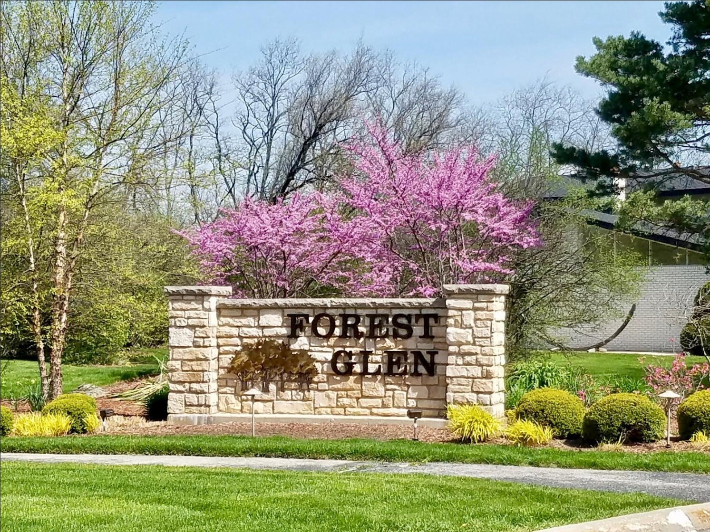
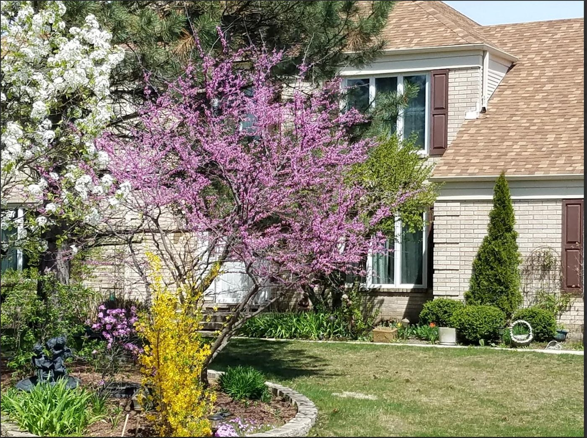
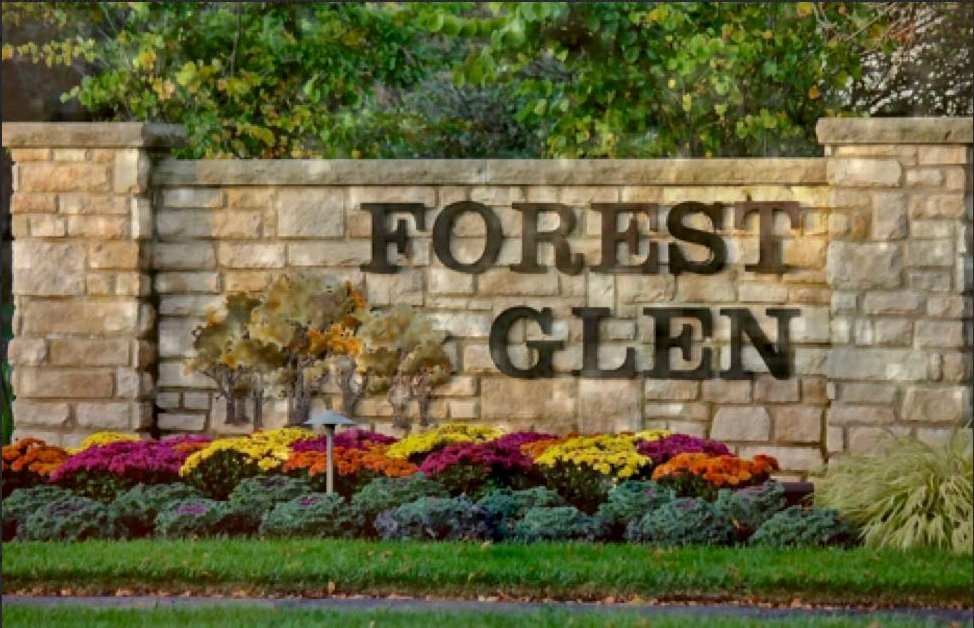

Forest Glen
A quiet, wooded neighborhood of custom homes east of York Road — where the redbuds bloom over our gates every April.
Loading…
View full calendarWelcome to Forest Glen
Forest Glen is a community of custom single-family homes built from the late 1970s through the mid-1980s, tucked into the trees east of York Road and south of Roosevelt Road in the Village of Oak Brook.
Our streets — Forest Glen Lane, Wood Glen Lane, Royal Glen Court, Burr Oak Court — wind beneath mature oaks and pines, past generous lawns and gardens that change with every season. The Forest Glen Community Homeowners Association cares for the limestone entrance monuments and their plantings, and brings neighbors together a few times each year.
Every homeowner in the subdivision is a member of the association, and every voice is welcome at our meetings.

One gate, four seasons

The essentials
Established
Mid-1970sHomes built through the mid-1980s
Location
Oak Brook, ILEast of York Rd · south of Roosevelt Rd
Homes
Single-familyCustom homes on wooded lots
Meetings
4 × a yearAll homeowners welcome
Questions for the association?
We keep things simple here — no feeds to follow. Reach the board by phone or email, or join us at the next meeting.